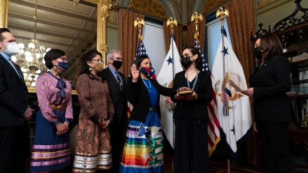
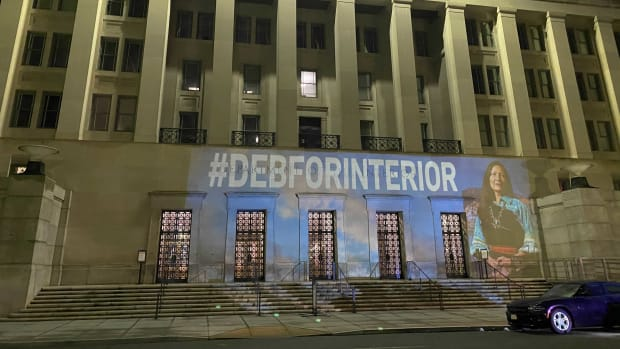

The federal agency announced new processes to “untangle” and advance the process of putting land into trust.
Under the Biden administration, the White House Council on Native American Affairs was reinstated in less than 100 days of office.
Interior Secretary Deb Haaland said at her first White House press briefing, “how monumental this week has been for Indigenous representation.”
The White House Tribal Nations Conference — a hallmark event for tribal leaders to meet with the nation’s top officials — is set to return later this year.
Interior Secretary Deb Haaland listened to the concerns of various pueblo governors then vowed for a “new era” in working with tribes, adding President Joe Biden has a shared commitment to restore the nation-to-nation relationship.
The Democratic Party announced a runoff slated for Wednesday; Acoma Pueblo candidate not chosen to advance in selection process.
The race to fill Interior Secretary Deb Haaland’s previous seat in Congress is a crowded one — and it’s gaining national attention from tribal leaders, even celebrities.

Interior Secretary Deb Haaland was ceremoniously sworn in by Vice President Kamala Harris on Thursday morning, marking a monumental step to becoming the first Native American to ever lead a Cabinet agency.
The Interior Secretary’s first day of work included staff introductions and a press briefing with Native media, first interview since taking office.
Deb Haaland is confirmed as the country’s Secretary of the Interior, blazing a trail as the first Native American to ever lead a Cabinet agency.

The day before Deb Haaland’s historic Senate confirmation hearing, Indian Country rallies its support on social media.